Next: Formal Statement of Algorithm
Up: Fast Hough Transform
Previous: Formal Statement of the
Contents
Speed Improvement to FHT Line Finder
#include <gandalf/vision/modified_fht.h>
The Fast Hough Transform can be used to fit a line to points on a plane.
However the modification to the FHT described here has proved to be slightly
faster for the line fitting problem, and it requires less memory.
It can readily be generalised and is applicable to
the same class of Hough transform problems as standard FHT.
However for higher dimensional parameter spaces (e.g. plane fitting)
standard FHT takes over as the faster method. To simplify the notation
the modified FHT (referred to henceforth as the MFHT)
is described for line fitting only.
The FHT line fitter was described in section 5.11.1.3 and the
notation used there will be followed. Points  ,
,  are scattered on the plane. A straight line in the plane is defined as
are scattered on the plane. A straight line in the plane is defined as
where  and
and  are constant. Each point ``votes''
for a line in parameter space
are constant. Each point ``votes''
for a line in parameter space
 .
Ranges for and are specified, so
.
Ranges for and are specified, so
 and
and
 .
Like the standard FHT, the MFHT proceeds by dividing this root
rectangle (hypercube) into four (
.
Like the standard FHT, the MFHT proceeds by dividing this root
rectangle (hypercube) into four ( ) child rectangles and counting the
lines (hyperplanes) passing through each child rectangle. If the number of
such intersections for any child is greater than a threshold
) child rectangles and counting the
lines (hyperplanes) passing through each child rectangle. If the number of
such intersections for any child is greater than a threshold  , the child
is subdivided. The MFHT differs in that the circumscribing hypersphere
(in this case ellipse) approximation is not used.
Intersections between line and rectangle are calculated exactly.
Hence there is no need to normalise parameter space in order to
transform the root rectangle into a square, as is required for standard FHT.
, the child
is subdivided. The MFHT differs in that the circumscribing hypersphere
(in this case ellipse) approximation is not used.
Intersections between line and rectangle are calculated exactly.
Hence there is no need to normalise parameter space in order to
transform the root rectangle into a square, as is required for standard FHT.
The line in
space defined by a point is
Intersection between line and rectangle is calculated by comparing the
coordinate of the vertices of the rectangle with the points
of intersection between the line and the constant
sides of the rectangle. This is illustrated in figure 5.6.
The ranges
and
define a rectangle in
space. Three lines  ,
,  and
and  are shown.
For each line, the values of the intersection points with the lines
and
(points and , and ,
are shown.
For each line, the values of the intersection points with the lines
and
(points and , and ,  and
in figure 5.6) are compared with
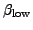 and
and
in figure 5.6) are compared with
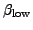 and
 . The values can be thought of as intercept values
of the line with the
lines.
It is clear that line and rectangle miss each other if and only if
if all four vertices are either below or above (i.e. their values
are all or
. The values can be thought of as intercept values
of the line with the
lines.
It is clear that line and rectangle miss each other if and only if
if all four vertices are either below or above (i.e. their values
are all or  ) both intercepts. Obviously this is true for line but
false for lines and .
) both intercepts. Obviously this is true for line but
false for lines and .
In practice it saves repeated computational effort if intersections between
a parent's four child rectangles and the lines are calculated at the same
time. Let us assume that enough lines intersect the rectangle in
figure 5.6 for it to be subdivided.
It is divided into four child rectangles , ,
and as shown in figure 5.7.
For each line such as line shown, there are three intercept
values, at
,
 and
.
Obviously
.
The intercepts are each to be compared with
the three values
,
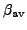 and
. A boolean flag is defined for each of
the nine vertices (, 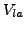 etc. in figure 5.7)
of the rectangular subdivision. Each flag is set to
and
.
Obviously
.
The intercepts are each to be compared with
the three values
,
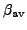 and
. A boolean flag is defined for each of
the nine vertices (, 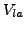 etc. in figure 5.7)
of the rectangular subdivision. Each flag is set to
 if the vertex lies below the line (i.e. if the value
of the vertex is less than the corresponding intercept value of
the line) and to 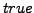 if it lies above it. Label the flags
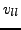,
if the vertex lies below the line (i.e. if the value
of the vertex is less than the corresponding intercept value of
the line) and to 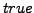 if it lies above it. Label the flags
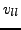,  etc. Then it follows that:-
etc. Then it follows that:-
- The line misses rectangle if and only if
, ,
 , 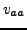
are all either or .
, 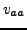
are all either or .
- The line misses rectangle if and only if
,
 , , 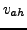
are all either or .
, , 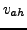
are all either or .
- The line misses rectangle if and only if
, ,
 ,
,  are all either or .
are all either or .
- The line misses rectangle if and only if
, , ,
 are all either or .
are all either or .
In the standard version of the FHT, the normalised distances from hyperplane
to centre of child hypercubes are calculated from the normalised distance
of the parent from the hyperplane. The child ``inherits'' the new normalised
distances from the parent, and passes them on to its own offspring.
The MFHT also passes information from parent to child, in this case
the intercept values.
Subsections
Next: Formal Statement of Algorithm
Up: Fast Hough Transform
Previous: Formal Statement of the
Contents
Philip McLauchlan
2009-01-27